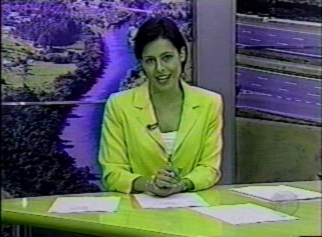

|
Em comemoração à Semana da Árvore, uma matéria exibida no Jornal Regional 1a. Edição do dia 26/09/2005,
apresentou o Projeto Plante a Vida! para toda a região de São Carlos.
Após a sua exibição, várias pessoas interessadas entraram em contato a fim de elogiar a iniciativa.
Houve um estreitamento do relacionamento com os órgãos públicos
ambientais,
tendo em vista que recebemos a doação de algumas ferramentas importantíssimas
e pudemos contar com o auxílio de maquinas pesadas para os plantios,
e na conservação dos locais aonde já havíamos plantado.
Gostaríamos de agradecer imensamente a equipe de reportagem do Jornal Regional/EPTV Central
pela valiosa oportunidade de divulgar o nosso projeto a dezenas de cidades da região,
incutindo assim, em larga escala, o ideal de preservação e amor à natureza!
Agradecemos também a todas as manifestações de apoio e carinho das pessoas
que entraram em contato conosco.
Abaixo você poderá assistir a reportagem, baixando o arquivo em formato
.mpg.
Basta clicar sobre a imagem com o botão direito do mouse e selecionar
"salvar destino como...".

reportagem.mpg (13.111Kb) |
O
arquivo de vídeo poderá ser visualizado nos programas
e .
Se
você quiser deixar a sua opinião sobre a reportagem, envie-nos um E-mail!
Participe do Projeto Plante a Vida!
A
natureza agradece!
|